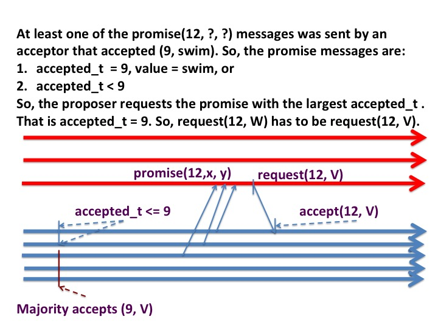

The Paxos algorithm is used to determine a consensus among a
collection of distributed agents. Consensus is important in a
variety of applications.
In a control system with multiple sensors
and actuators, the actuators have to come to a consensus about the
state of the environment so that they can operate in concert. A
vehicle would crash
if some actuators caused the vehicle to accelerate while other
actuators applied brakes.
Some applications of multi agent systems require the agents to
elect a single leader. Clearly, all agents have to come
to a consensus on the same leader. Multiple business agents have
to come to a consensus on whether a transaction was completed when
they collectively manage a distributed ledger.
Are there algorithms for consensus in systems in which agents
operate at arbitrary speeds, and where messages may be lost and
duplicated but not corrupted?
Consensus is impossible with a single
faulty agent
Consensus is impossible with even a single faulty agent. The
theorem saying so was published by Fischer, Lynch and Patterson.
You can get the idea of the problem with arriving at a consensus
when message delays are finite, but arbitrarily long, by looking
at the following scenario. A collection of 2N + 1 agents want to
come to a consensus about a color. N of the agents pick blue and
N+1 pick red, but one of the red agents is arbitrarily slow. The
2N non-slow agents exchange messages among each other, and each of
these 2N agents gets N votes for red and N votes for blue. Agents
decide to take a majority vote, and in the event of a tie pick
blue.
How long should they wait for the slow agent?
Consider an algorithm in which agent waits until its local clock
shows an elapsed time of T and then makes a decision based on the
votes that it has. An agent Y gets N red and N blue votes when
its clock shows an elapsed time of T, and agent Y decides that the
consensus is blue. Another agent Z has a slower clock and gets a
red vote from the slow agent for a total of N+1 red votes, before
Z's clock shows an elapsed time of T. So Z determines that the
consensus is red. The algorithm fails because Y and Z have not
come to a consensus.
No algorithm is guaranteed to come to a consensus in finite time if
messages can be arbitrarily slow or if agents can be arbitrarily slow.
Systems with synchronized clocks don't have this particular
problem. We'll look at consensus in such systems later.
Fig.1: Problem with a slow agent
Best Effort Consensus
The theorem says that there is no algorithm that guarentees that
consensus can be reached in all scenarios;
however, consensus can be reached in most practical situations. An idea
to overcome the counterexample given above is:
Agents keep trying repeatedly until they reach consensus. The theorem tells us
that the agents may have to keep trying for ever. We expect, however,
that in most practical situations their attempts will succeed at some point.
The key question is: What does keep trying mean? When does one trial
end and the next one begin? If agents use timeouts to end a trial,
then --- because clocks aren't synchronized --- the timeouts may complete
at different times.
We'll see that we can use the idea of time, even though clocks aren't
synchronized. We've done that before with logical clocks.
Let's study an
algorithm that doesn't guarantee progress but does guarantee that all
non-faulty agents either have no value or have the same value. The
description of the algorithm has a type of agent called
proposers and a type called learners. (In an
implementation an agent may play the role of both proposer and
learner.) Proposers propose values. Learners come to a consensus among
the proposed values. Assume that all agents can communicate with each
other across message-passing channels. Messages may be lost. Agents
may stop and restart later, and may be arbitrarily slow.
Fig.2: Proposers and Learners
Specification
Associated with each learner \(L\) is a local variable \(L.value\)
which is initially \(null\). Similarly, each proposer \(P\) has a
local variable \(P.value\) which is initially the value that the
proposer is proposing.
After a learner learns a value it doesn't later learn a different
value.
For all learners \(L\), and for all non-null values \(V\):
\(
stable (L.value = V)
\)
The Paxos Algorithm
The Paxos Algorithm, proposed by Leslie Lamport, has an additional
layer of agents called acceptors. The communication structure
between agents is shown in the figure below.
Fig.3: Proposers, Acceptors and Learners
Messages
The algorithm has four types of messages. The parameter \(t\) in all
cases is a timestamp.
prepare(t) sent from proposers to acceptors.
promise(t) sent from acceptors to proposers.
request(t) sent from proposers to acceptors.
accepted(t) sent from acceptors to proposers.
The messages are sent in the above order.
Fig.4: Messages
We will describe the algorithm in three parts. The first two parts
deal only with proposers and acceptors; the third part deals with
acceptors and learners. The first part deals exclusively with
timestamps, the second part also deals with values.
Proposers, Acceptors and Timestamps
This part of the description of the algorithm deals only with
timestamps, and only with proposers and acceptors. The algorithm, as
described below, does not terminate; we will discuss termination
later.
Timestamp Algorithm for Proposers
Associated with each proposer \(P\) is a local variable \(P.t\) which
is a number. We refer to \(t\) as a timestamp.
initially P.t = 0
while true:
1. start timer; restart loop body if timeout
2. increment P.t by a positive amount
3. send prepare(P.t) to all acceptors
4. if P receives promise messages where
promise.t == P.t from a majority of acceptors:
send request(P.t) to all acceptors
// else execution of the loop body times out
5. if P receives accepts messages where
accepts.t == P.t
from a majority of acceptors:
break
Timestamp Algorithm for Acceptors
Associated with each acceptor \(A\) is a local variable \(A.t\) which
is a number. We refer to \(t\) as a timestamp.
initially A.t = 0
while true:
1. upon receiving a prepare message from a proposer P:
if prepare.t >= A.t:
A.t = prepare.t
send promise(A.t) to P
2. upon receiving a request message from a proposer P:
if request.t >= A.t
A.t = request.t
send accepts(A.t) to P
We shall say that an acceptor "accepts t" when it sends an accepts(t)
message to any proposer.
Observations
Meaning of A.t
For an acceptor A, A.t is the maximum value of prepare.t and request.t
over all the prepare and request messages that A has received.
Fig.5: Acceptor's t value
Meaning of promise.t
After an acceptor sends a promise(t) message, that acceptor will not
reply to prepare(t') or request(t') messages where t' < t.
Fig.6: promise.t
Theorem 1
If any majority of acceptors accepts \(T\) after any acceptor accepts \(t\) then
\(T \geq t\).
Proof
An acceptor accepts t only after receiving a request(t)
message from a proposer. See line 2 of the acceptor's algorithm.
A proposer sends a request(t) message only after receiving promise(t)
messages from a majority of acceptors. See line 4 of the proposer's
algorithm.
After an acceptor accepts t there exists a majority of proposers that
do not reply to prepare(t') or request(t') messages where t' <
t. Let's call the set of proposers in this majority \(m\).
Let \(m\) be the set of proposers in the majority that accepts \(T\)
after the acceptor accepts t. The sets \(m\) and \(m'\) have an
element in common because any two majorities have at least one common
element. Let \(A\) be a common element of both majorities.
\(A\) does not reply to prepare(t') or request(t') messages where t' <
t, and so if accepts \(T\) then \(T \geq t\).
Fig.7: Idea of the proof: 1Fig.8: Idea of the proof: 2
The two figures, above, illustrate the ideas behind the proof.
We will find the following verion of theorem 1 to be useful.
Corollary
If a majority of acceptors has accepted \(T\) at some point, then no
acceptor has accepted \(t\) at that point where \(t > T\).
Proposers, Acceptors and Values
Now we give the complete algorithms for proposers and acceptors.
Messages
The messages have fields in addition to timestamps.
promise(t, accepted_t, value) sent from acceptors to proposers.
request(t, value) sent from proposers to acceptors.
accepts(t, value) sent from acceptors to proposers.
Algorithm for Proposers
Associated with each proposer P is a local variable P.value
which is initially the value proposed by P, and which may change.
initially P.t = 0, P.value = value proposed by P
while true:
1. start timer; restart loop body if timeout
2. increment P.t by a positive amount
3. send prepare(P.t) to all acceptors
4. if P receives promise messages where
promise.t == P.t from a majority of acceptors:
let M be the set of these messages
where promise.value is not null
if M is not the empty set:
let msg be the element of M with
the largest accept_t
set P.value to msg.value
send request(P.t, P.value) to all acceptors
5. if P receives accepts messages where
accepts.t == P.t
from a majority of acceptors:
break
Algorithm for Acceptors
Associated with each acceptor \(A\) are local variables A.accepted_t
and A.value which are both null initially. A.accepted_t and A.value
are timestamp and the value (respectively) of the most
recent proposal to which A replied with an accepts message.
initially A.t = 0, A.accepted_t = null, A.value = null
while true:
1. upon receiving a prepare message from a proposer P:
if prepare.t >= A.t:
A.t = prepare.t
send promise(A.t, A.accepted_t, A.value) to P
2. upon receiving a request message from a proposer P:
if request.t >= A.t
A.accepted_t, A.value = request.t, request.value
send accepts(request.t, request.value) to P
We shall say that an acceptor "accepts (t, V)" when it sends an
accepts(t, V) message to any proposer.
Theorem: Stability of Majority
Acceptance
If any acceptor accepts (t', V') after a majority of acceptors accepts
(t, V) then V = V'
Proof
Let \(A\) be the first acceptor to accept any (t', V') where t' > t,
after the majority accepts (t, V).
From line 2 of the acceptor's program,
\(A\) received request(t', V') from a proposer P before \(A\)
accepted (t', V').
From line 4 of the proposer's program,
proposer P received promise messages with promise.t = t'
from a majority of acceptors before P
sent request(t', V'). Let this majority be M'.
Two majorities have at least one element in common.
Let A' be any acceptor in both M and M'. Then since A' accepted (t, V),
it follows from line 1 of the acceptor's program that A' sends
promise(t', t, V) to proposer P.
Let C be an acceptor in M' and not in M. From theorem 1, C.accepted_t
< t or C.value = V. So, C sends a promise message with
promise.accepted_t < t or promise.value.
Proposer P chooses the promise message with the largest accepted_t
field. The message with the largest accepted_t is promise(t', t,
V). So, proposer P sends request(t', V) to acceptor A. Therefore
acceptor A accepts (t', V).
The sequence of figures illustrates the steps of the proof. In these
figures t = 9 and t' = 12.
Fig.9: Idea of the proof: 1Fig.10: Idea of the proof: 2Fig.11: Idea of the proof: 3

Fig.12: Idea of the proof: 4Fig.13: Idea of the proof: 5Fig.14: Idea of the proof: 6
Learning Consensus
We now have a simple solution to learn a consensus. Acceptors send
accept messages to all learners. When a learner receives
accept messages with the same accept.t and accept.V values then the
learner learns the value V.
From the above theorem, after a majority
of acceptors accept (t, V), all subsequent acceptances will accept the
same V.
Recall that the specification has three parts: (1)
learners learn values that have been proposed, (2) all learners learn
the same value, and (3) and after learning a value a learner doesn't
lear a new value.
The proof that the algorithm satisfies the specification is
straightforward.
The algorithm can be optimized. The optimizations don't change the
basic structure of the proof.